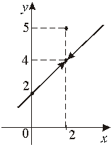
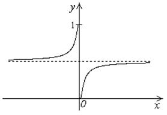
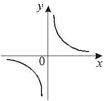

13.2. Точки разрыва и их классификация
Точка  , в которой
функция
, в которой
функция  обладает свойством непрерывности,
называется точкой непрерывности функции, в противоположном случае точка называется точкой разрыва функции.
обладает свойством непрерывности,
называется точкой непрерывности функции, в противоположном случае точка называется точкой разрыва функции.
, в которой
функция обладает свойством непрерывности,
называется точкой непрерывности функции, в противоположном случае точка называется точкой разрыва функции.Для классификации точек разрыва удобно использовать третье
определение непрерывности.
Если односторонние пределы существуют, причем а функция не
определена в точке , или то точка называется
точкой устранимого разрыва.
не
определена в точке , или то точка называется
точкой устранимого разрыва.Устранимый разрыв можно устранить, вводя функцию

Точка  – точка устранимого
разрыва, поскольку , .
– точка устранимого
разрыва, поскольку , .
– точка устранимого
разрыва, поскольку , .Устраним разрыв:
Функция непрерывна всюду.

Если:
1) – точка разрыва  ,
,
– точка разрыва ,2) существуют конечные пределы справа и слева: ,
3)
то точка называется точкой
разрыва 1-го рода (неустранимый конечный скачок).
называется точкой
разрыва 1-го рода (неустранимый конечный скачок).,
 – точка разрыва .
– точка разрыва ..
 . – точка разрыва первого
рода.
. – точка разрыва первого
рода.
Если хотя бы один из односторонних пределов не существует
или бесконечен, то точка х0 называется точкой разрыва 2-го рода.
,
– точка разрыва 2-го рода;
так как, .
